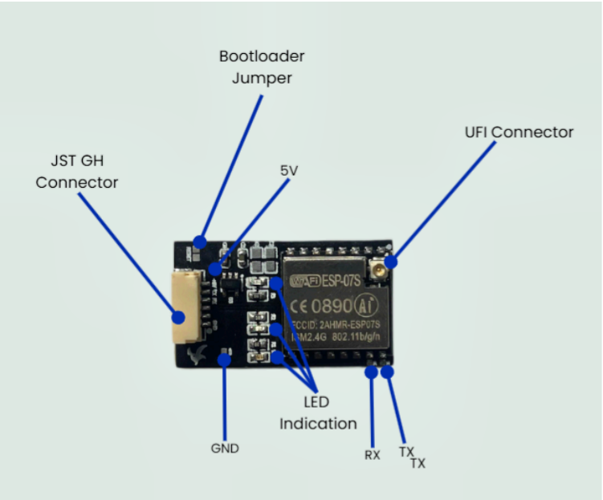
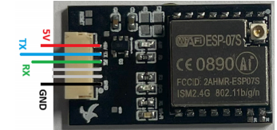
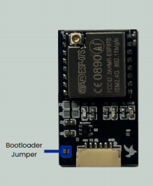
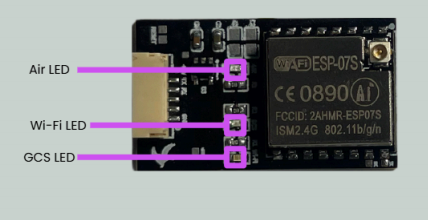
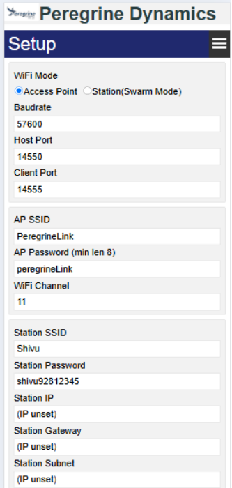

Our Products

Peregrine MAVLink Wi-Fi Module
Lightweight Wi-Fi bridge for autopilots, offering 300m to 1km range and seamless connectivity to ground control stations.
Enhance your drone operations with the Peregrine MAVLink Wi-Fi Module – reliable, lightweight, and long-range communication for autopilots and ground control stations.
Explore Now
Lightweight Wi-Fi bridge for autopilots, offering 300m to 1km range and seamless connectivity to ground control stations.

Communicate seamlessly with your drone over distances of 300m to 2.5km. The Peregrine module ensures a stable connection even in challenging environments. Its U.Fl connector supports an external antenna for enhanced signal strength. This range is ideal for aerial surveys, inspections, or long-distance FPV flights. Stay in control, no matter how far your drone flies.
At just 5g, the Peregrine module adds minimal weight to your drone setup. This lightweight design ensures no compromise on flight performance or battery life. Its compact size makes it perfect for small and large drones alike. Ideal for racing drones or professional setups needing efficiency. Fly longer and farther without added bulk.

Connects to any Wi-Fi-enabled ground control station, including smartphones and laptops. Integrates seamlessly with Pixhawk and other autopilots via a JST-GH connector. Use it with Mission Planner, QGroundControl, or custom apps effortlessly. This flexibility suits hobbyists, developers, and professionals alike. Control your drone with the tools you prefer.
Founded in 2020, Peregrine Aerospace Pvt. Ltd. is a leader in drone communication technology, dedicated to enhancing aerial operations through innovative solutions. Our mission is to bridge the gap between drones and their operators, ensuring seamless and reliable connectivity in every flight scenario.
At the heart of our offerings is the Peregrine MAVLink Wi-Fi Communication Module, a lightweight and powerful device designed to connect autopilots like Pixhawk to any Wi-Fi-enabled ground control station, including smartphones. Weighing just 5g, the module delivers long-range connectivity of up to 2.5km, making it an essential tool for drone enthusiasts, developers, and professionals alike.
Our team of engineers and drone experts has worked tirelessly to develop a product that meets the rigorous demands of modern drone operations. With features like LED status lights, easy configuration via a web interface, and compatibility with industry-standard autopilots, the Peregrine module ensures that you stay in control, no matter the distance.
We are committed to empowering our users with technology that enhances precision, reliability, and efficiency in every mission. Whether you’re a hobbyist capturing stunning aerial footage or a professional conducting complex surveys, Peregrine Aerospace Pvt. Ltd. is here to elevate your drone experience with cutting-edge communication solutions.
The Peregrine is a MAVLink bridge that connects autopilots with any Wi-Fi enabled ground control station, even a smartphone. The Peregrine boasts the following features:
The following figure outlines the main components of the Peregrine.
Overview - Peregrine Front
The Peregrine uses an ESP07-S board for its Wi-Fi communication and computation. The best datasheet available for the ESP07-S is available at ESP07-S Product Specification (PDF). The firmware for the Peregrine can be found on Google Drive.
Beyond Robotix Peregrine comes with the following:
The gain of the antenna (4dBi) depends on the antenna chosen when purchasing.
| Mass | 5g |
|---|---|
| Voltage Input | 5V |
| Max Output Power | 20 dBm (~112 mW) |
| Current Continuous | 20 mA |
| Range | 300m - 2.5km |
| Current Peak | 250 mA |
Important: Always have an antenna connected to the Peregrine before powering on.
To update or find any settings, you can do this using any browser by going to 192.168.4.1 while connected to the Peregrine. From this page, you will be able to update any settings, find the IP and port number of the Peregrine, and update the firmware. Ensure you save and reboot to utilize any changes.
Station mode enables Peregrine to connect to an already established Wi-Fi Access Point. This is useful to communicate with multiple Peregrine units at a time. When powering on a Peregrine, it will search for the pre-defined Access Point for 1 minute before falling back to Access Point Mode.
To enable Station Mode, you must know the SSID and Password of the Access Point you want the Peregrine to connect to.
Access Point Mode, which is the default mode, is used when you want the Peregrine to broadcast its own Wi-Fi network. You are then able to connect to this network using any Wi-Fi enabled device with ground control software, like Mission Planner or QGroundControl.
Peregrine Pinout (N/C = Not Connected)
The connector to the autopilot is a 6-pin JST-GH connector. The pinouts on the Peregrine are inline with the Pixhawk, hence an unmodified 6-pin JST-GH can be connected directly to any Pixhawk. The TX and RX have been swapped appropriately for a UART connection.
The antenna connector is a U.Fl connector (also known as IPEX). You can connect an antenna directly to the board or use a U.Fl to SMA adaptor to connect to a wider range of antennas.
Peregrine Jumpers
The jumpers on the Peregrine allow you to boot the Peregrine into bootloader mode or return the settings of the Peregrine to its factory default. The bootloader mode is used for checking the health of the ESP07-S module and for uploading firmware using an FTDI (or TTL) connection to a PC. An in-depth overview of how to perform this is outlined in the Firmware Update Section.
To start the Peregrine in bootloader mode, J1 must be jumped (short-circuited using a flathead screwdriver or similar) as the board is being powered up. If successful, you will see the GCS Status LED become (softly) illuminated. Once this LED is illuminated, you can remove the short circuit.
Peregrine LED Status Lights
The Peregrine is equipped with three status lights: Air, Wi-Fi, and GCS. The Air LED describes the status of communications between the Peregrine and the autopilot, namely if a heartbeat is present. The Wi-Fi LED describes the status of the Wi-Fi network, for example, if the Peregrine is connected to a network or waiting for connection. Finally, the Ground Control Station (GCS) LED describes the communication between the Peregrine and the GCS software, similarly, if a heartbeat is present.
The meaning of the status light indications are outlined in the following table:
Peregrine LED Status Lights Definitions
| LED | Color | Pattern | Status |
|---|---|---|---|
| Air | Blue | Solid | Connected (Heartbeat present) |
| Air | Blue | Dashed | Waiting for connection |
| Air | Blue | Dotted | Error (No heartbeat) |
| Wi-Fi | Green | Solid | Connected to network |
| Wi-Fi | Green | Dashed | Waiting for network |
| Wi-Fi | Green | Dotted | Network error |
| GCS | Red | Solid | Connected (Heartbeat present) |
| GCS | Red | Dashed | Waiting for connection |
| GCS | Red | Dotted | Error (No heartbeat) |
When connecting to the Peregrine, go to 192.168.4.1.
From here, you will be able to change all the following parameters:
Ensure you reboot after changing settings!
Updating firmware using the Web GUI:
Note: The update takes about 30 seconds, so please be patient. Refresh the page after 30 seconds, and you should see the updated version number in the top right of the Web GUI.